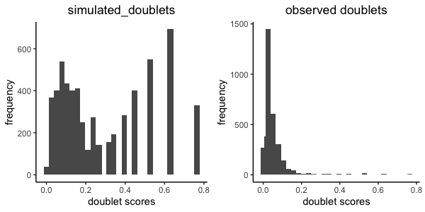
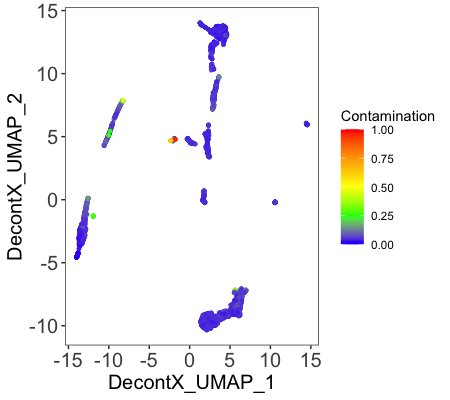
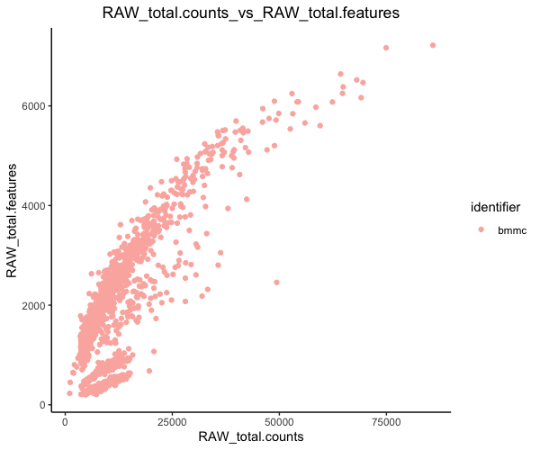
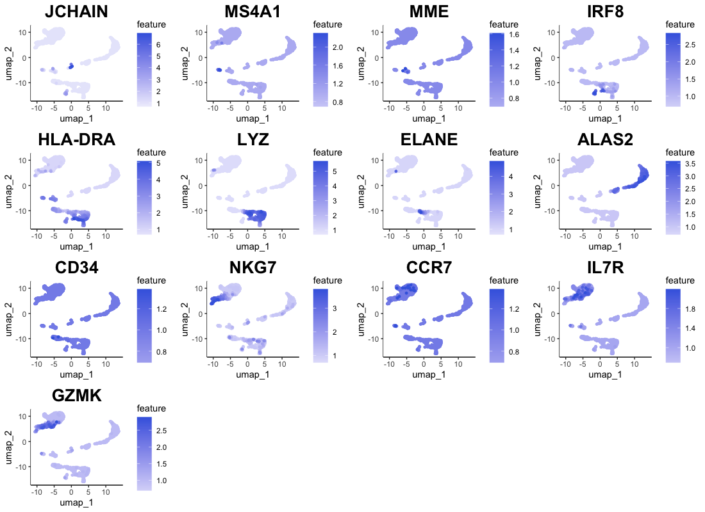

Getting Started
Connor H Knight & Faraz Khan
11/08/2021
using_IBRAP.RmdAnalysing 2994 Bone Marrow Mononuclear Cells (BMMC) from a single sample.
To demonstrate IBRAP we enlisted a sample produced by Oetjen et al. This can be downloaded using the following link:
https://www.dropbox.com/s/s126bv59mjnhkre/marrow_A.rds?dl=0
bmmc <- readRDS(file.choose())
Section 1: Cleaning droplet-based datasdets
Section 1.1: Applying the functions
Droplet-based datasets present unique confounding effects, including: doublets and ambient RNA contamination. To remove them we have enlisted scrublet and decontX, respectively. Thus far, there is no consensus on the order of application. However, we prefer scrublet followed by decontX.
# We simply supply our generated count matrix to both functions
bmmc <- perform.scrublet(counts = bmmc)
bmmc <- perform.decontX(counts = bmmc)Section 1.2: Explaining the results

Scrublet functions by simulating multiplets from out datasets (by integrating similar cells); we can see these simulated cells with high doublet scores. For this example, we can see a minimal number of cells in our observed cells with high doublet scores. Cells that are above a certain doublet score threshold are omitted from the dataset.

DecontX creates a umap projection of samples and colours them according the amount of contamination presented within a cell. In this sample, we observe minimal contaminaton. WARNING: DecontX should only be used if you expect ambient RNA otherwise it can drastically affect downstream results.
Now that we have removed these confounding effects from our dataset we can move on with our analysis.
Section 2: Initiating the IBRAP S4 object
Lets start by initiating our IBRAP class object ready for downstream analyses. You can see the structure and a manual for these in our reference section.
# whilst creating the object we begin filtering the cells and genes using min.cells and min.features
bmmc <- createIBRAPobject(counts = bmmc,
original.project = 'bmmc',
method.name = 'RAW',
min.cells = 3,
min.features = 200)
This produces an S4 class object that initially contains sample metadata and a raw method assay contained in object@methods. A couple of important steps happen here: metadata, including: total counts and total genes per cell are stored in object@sample_metadata, and some initial filtering of the count matrix happens. In this case, we removed any genes that are not present in at least 3 cells and removed cells with less than 200 genes We performed the latter as to remove any droplets that are empty and do not contain true cells.
Section 3: Quality Control
Section 3.1: Metrices
Next, we must assess the quality of our datasets, if you wish to read in-depth about Quality Control (QC) then please refer to this publication. In summary, we use the following metrices to QC our data:
| QC.Metric | Description |
|---|---|
| Mitochondrial Fraction | An abnormally high mitochondrail fraction indicates improper wet lab preparation |
| Total RNA | A difference in count value can affect downstream processes and requires normalising downstream |
| Total Genes | Low gene presence indicates droplets containing no cells whereas, disproportionately high number of genes indicates a droplet containing more than one cell |
As previously mentioned we already generated total count and total genes whilst creating our ibrap object. However, percentage mitochondrial genes requires a second function since mitochondrial genes have a varying prefix in datasets:
bmmc <- find_percentage_genes(object = bmmc, pattern = '^MT-',
assay = 'RAW',
slot = 'counts',
column.name = 'RAW_percent.mt')
These fraction results will be saved under object@sample_metadata alongside total counts and total genes for use downstream.
Section 3.2: Visualisation
Visualising this information is important for high dimensional data. Thus, we can achieve this in two ways: using violin plots or comparing two metrices with scatter plots.
plot.QC.vln(object = bmmc,
metadata.columns = c('RAW_total.features',
'RAW_total.counts',
'RAW_percent.mt'))
The violin plot is split into its metrices and displays the volume of cells expressing the value on the y axis.

Scatter plots enable us to observe correlations between metrices, i.e. the higher the amount of features in a cell the higher the number of counts there should be.
plot.qc.scatter(object = bmmc,
x = 'RAW_total.counts',
y = 'RAW_total.features',
split.by = 'original.project'
)
Now that we have eye-balled our data we can proceed to filtration.
Section 3.3: Filtration
We clean our data further by applyng filtration cut-offs. We remove cells with a high number of features since this will remove any doublets that were missed by scrublet (two cells in a droplet will display a disproportionately higher number of features). Then, we remove cells with a certain fraction of mitochondrial counts, we do this to remove cells with damaged mitochondria during the preparation process.
bmmc <- filter_IBRAP(object = bmmc, RAW_total.features < 3000 & RAW_percent.mt < 8)Section 4: Data Transformation
Section 4.1: Applying The Functions
To accommodate downstream analyses, we must promote a normal distribution and numerical scaling in our data. We included four separate normalisation methods that are applied as such:
bmmc <- perform.sct(object = bmmc,
assay = 'RAW',
slot = 'counts', vars.to.regress = 'RAW_percent.mt')
bmmc <- perform.scran(object = bmmc,
assay = 'RAW',
slot = 'counts',
vars.to.regress = c('RAW_percent.mt' 'RAW_total.counts'))
bmmc <- perform.scanpy(object = bmmc,
vars.to.regress = c('RAW_percent.mt' 'RAW_total.counts'))For these methods, we transformed our raw counts, and regressed some QC metrices from our datasets to not allow them to affect our downstream analyses. There are some notable differences here. For example, SCT automatically regresses RAW_total.counts so we do not need to specify this however, the others you do. These parameters are set as default, any deviation from these is at your own risk since they could produce incorrect results. Nonetheless, feel free to play around and observe the difference.
Section 4.2: How Functions Work Downstream
Each normalisation function produces a new method-assay which contains the results. Any downstream analyses will be stored in these separate compartments, respective to the normalisation method. i.e. object@methods contains all of the method assays. Hereon, function will iterate through the indicated method-assays and any other inputs within the assays. For example, if you supply c(‘SCT’,‘SCRAN’,‘SCANPY’) as assays and c(‘pca_umap’, ‘pca_t-SNE’) as reductions. A function will perform firstly on ‘pca_umap’ in the ‘SCT’ assay, then the ‘pca_t-SNE’ in the ‘SCT’ assay. After these the function will move on to ‘pca_umap’ in the ‘SCRAN’ assay and so on.
Section 4.3: Downstream Pipeline Deviations
Since IBRAP incorporated multiple pipelines some pipelines begin to vary at this point. For example, Scanpy PCA calculation and neighbourhood graph generation slightly differ. IBRAP accomodates this by identifyig the assay name and automatically applying the correct function. When adding suffixes to any result naming it is important not to include your own underscores.
Section 5: Removing Certain Highly Variable Genes
In some instances, certain genes require omission from the highly varaible genes. This can be achieved with the following function:
# This function finds all ribosomal genes and removes them from the HVG list of the three assays
unwanted <- as.character(rownames(bmmc)[grepl("^RPL" ,x=rownames(bmmc))])
bmmc <- remove.hvgs(object = bmmc, assay = c('SCT', 'SCRAN', 'SCANPY'),
hvgs.omit = list(unwanted,unwanted,unwanted))Section 6: Linear Dimensionaly Reduction
Section 6.1: Principal Component Analysis
Now that our data has been appropriately transformed and highly varaible genes have been identified we can reduce the number of dimensions using Principal Component Analysis (PCA). Reduction methods summarise as much information from the higher dimensions into lower dimensions as possible. Therefore, these lower dimensions facilitate a faster computing time and require less computational resources.
bmmc <- perform.pca(object = bmmc,
assay = c('SCT', 'SCRAN', 'SCANPY'),
n.pcs = 50, reduction.save = 'pca')As you can see, we have requested this function to iterate through all three assays and to save the reduction as pca. The produced principal components (PCs) contain a different explained variance, high variance PCs contain the most information between points and low provide the opposite. Furthermore, low variation PCs create a false closeness between cell points and thus require exclusion from some downstream analyses. A simple way to identify the number of PCs to retain is to plot them in descending order and find the elbow point. The elbow point being the bend in the plot of points.
For these assays, the elbow point is around 10-15 PCs.
Section 6.2: Diffusion Maps
We use next calculate diffusion maps from our PCA reduction. Diffusion maps are useful in visualising the developmental trajectory in our cellular population once processed with a non-linear method, such as: UMAP. To create this we apply the following function:
bmmc <- perform.diffusion.map(object = bmmc, assay = c('SCT', 'SCRAN', 'SCANPY'), reduction = 'pca', dims = list(0))Again, we have requested for IBRAP to iterate through our three assays whilst using their PCA reduction. We specified the dimensions to use as 0 (which means all components) and the default setting for this function produces 15 diffusion components. Both the PCA and diffusion map will be saved in the method assay in assay@computational_reductions.
We will then process these downstream. Next, we will cluster our datasets.
Section 7: Generating Neighbourhood Graphs & Clustering
Section 7.1: Neighbourhood Graphs
Prior to clustering it is important to ascertain the relationship and closeness of our cells. As a pre-requisite to clustering we are going to produce a k-nearest neghbour graphs. SCT, SCRAN, and SCANPY use one algorithm whilst SCANPY uses its own version. This is produced by applying the following function:
# here we generate the neighbour graph for PCA and produce a diffusion map from the PCA-neighbour graph
bmmc <- perform.nn(object = bmmc, assay = c('SCT', 'SCRAN', 'SCANPY'),
reduction = c('pca', 'pca:diffmap'),
dims = list(0,0))
In this function, we have requested that the function iterate through all three assays, within each assay to use pca and then pca:diffmap using all dimensions (seen as list(0,0)). These results will be stored under assay@neighbours ready for use downstream.
Section 7.2: Clustering
Finally, using our neighbourhood graph we must cluster close networks together to infer individual cell types. perform.graph.cluster() provides either: - Louvain algorithm (1) - Louvain algorithm with multilevel refinement (2) - Smart Local Moving (SLM) (3) - Leiden (4)
These methods can be adjusted using thre res parameter in the function typically ranging between 0.1-1.5. A higher resolution finds more communities in a sample, whereas a lower value produces the opposite. The default option for this function is to use the following resolutions: c(0.1, 0.2, 0.3, 0.4, 0.5, 0.6, 0.7, 0.8, 0.9, 1, 1.1, 1.2, 1.3, 1.4, 1.5). However, feel free to adjsut this to your requirement.
bmmc <- perform.graph.cluster(object = bmmc,
assay = c('SCT', 'SCRAN', 'SCANPY'),
neighbours = c("pca_nn", "pca:diffmap_nn"),
algorithm = 1)For this example we clustered all assays and used our neighbourhood graphs generated from PCA and Diffusion maps using the classic louvain algorithm. As mentioned above there are a few graph-based methods. But, we have also inclusing a couple of alternatives that are described in another tutorial
Section 8: Non-linear Reduction
Now we have reduced the dimensionalty of our datasets using non-linear methods and clustered the cells according to their similarity we must visualise these results. However, linear methods such as PCA and diffusion maps are inherently innapropriate for visualisation. Therefore, we must process then using non-linear methods.
IBRAP integrated the ability to perform 3 methods: - UMAP - t-SNE - lvish (a LargeVis adaptation)
For this tutorial we will focus on UMAP.
bmmc <- perform.umap(object = bmmc,
assay = c('SCT', 'SCRAN'),
reduction = c('pca', 'pca:diffmap'),
n.dims = list(15,0))Scanpy UMAP reductions are produced from the nearest neighbourhood graph that we previously preoduced using the perform.nn() function previously. SCANPY would therefore be processed like this:
bmmc <- perform.umap(object = bmmc,
assay = c('SCANPY'),
graph = c('pca_nn'),
n.dims = list(15))
bmmc <- perform.umap(object = bmmc,
assay = c('SCANPY'),
reduction = c('pca:diffmap'),
n.dims = list(0))Simply, we asked this function to iterate through all assays, and use the first 15 components of the pca reduction and to use all components of the diffusion map.
Now, we have generated a high volume of results, especially clustering results. Therefore, it is beneficial to applying to some benchmarking comparisons.
Section 9: Benchmarking Results
IBRAP contains a benchmarking function that enlists multiple metrices to assess clustering performance. These metrices are only informative however and will be unable to distinguish the best results (that is down to the user to decide).
| QC.Metric | Description |
|---|---|
| Average Silhouette Width (ASW) | This measures how close cells are to their own cluster (cohesion) whilst comparing to other clusters (separation) A higher value is good. |
| Dunn Index | Comapres the ratio of the smallest distance between observations not in the same cluster to the largest intra-cluster distance. A higher value is preferred. |
| Connectivity | This uses a k-nearest neighbour algorithm that determines the connectedness between clusters. A depleted value is prefered. |
To set up the function, supply the dataframes contained within the assay@cluster_assignments you wish to benchmark under clustering. Next, include the corresponding reductions for them, normally this will be a umap reduction using 1:2 dimensions. For example, if clustering and the umap were calculated using PCA these should be paired, likewise if they were calcualted using pca:diffmap then they should be paired.
bmmc <- benchmark.clustering(object = bmmc,
assay = c('SCT', 'SCRAN', 'SCANPY'),
clustering = c('pca_nn:louvain', 'pca:diffmap_nn:louvain'),
reduction = c('pca_umap', 'pca:diffmap_umap'),
n.dims = 1:2)We can visualise the comparison within a clustering method dataframe using the following function:
plot.cluster.benchmarking(object = bmmc, assay = 'SCT',
clustering = 'pca_nn:louvain')This provides a line graph showing the metrices. As you can see, there is a correlation between the results. However, do not be fooled by the preferred valuei n very low settings, this is likely due to a smaller number of communities being detected at lower resolutions which means that clusters are typically more separated.
Now that we have our results and benchmarking to guide us we can begin to visualise the results.
Section 10: Visualising Clustering Results
Since we have 3 different normalisation method it is beneficial to observe the difference in their produces topology and clustering.
The main challenge with the plotting function in IBRAP is isolating the correct labelling. In general, plotting functions will ask for the assay which is contained within object@methods, the clust.method that is contained withing @cluster_assignments, and the column which would be contained with in that cluster assignment. One thing to note, is that if you wish to access columns that are contained within object@sample_metadata.
plot1 <- plot.reduced.dim(object = bmmc,
reduction = 'pca_umap',
assay = 'SCT',
clust.method = 'pca_nn:louvain',
column = 'neighbourhood_graph_res.0.8', pt.size = 0.1) +
ggplot2::ggtitle('SCT') +
ggplot2::theme(plot.title = ggplot2::element_text(hjust = 0.5))
plot2 <- plot.reduced.dim(object = bmmc,
reduction = 'pca_umap',
assay = 'SCRAN',
clust.method = 'pca_nn:louvain',
column = 'neighbourhood_graph_res.0.8', pt.size = 0.1) +
ggplot2::ggtitle('SCRAN') +
ggplot2::theme(plot.title = ggplot2::element_text(hjust = 0.5))
plot3 <- plot.reduced.dim(object = bmmc,
reduction = 'pca_umap',
assay = 'SCANPY',
clust.method = 'pca_nn:louvain',
column = 'neighbourhood_graph_res.0.8', pt.size = 0.1) +
ggplot2::ggtitle('SCANPY') +
ggplot2::theme(plot.title = ggplot2::element_text(hjust = 0.5))
plot1 + plot2 + plot3As we can see, each normalisation method changes the final topology of the data. Furthermore, we can see that SCT, SCRAN, and SCANPY produced 18, 14, and 14 communities, respectively. Therefore, it is important to assess all normalisation methods and their subsequent results since they can differ and some perform better than others according to datasets. For this analysis we will proceed using the SCT results.
Section 11: Biological Analysis
To understand the biology driving the clustering we can tackle it in two ways: differential expression analyses or visualisation.
Section 11.1
Differential expression analyses can be performed either 1 cluster compared against all other cells or 1 cluster against 1 other cluster. In this tutorial we will use the 1 v all function.
DE_res <- perform.diffexp.all(object = samp,
assay = 'SCT',
test = 'MAST',
identity = as.vector(samp@methods$SCT@cluster_assignments$`pca_nn.v1:louvain`$neighbourhood_graph_res.0.8))These results will produce a table with key columns: the gene names, pct.1 and pct.2 comparing expression values, and their p-value. These columns are key in identifying the strength in the difference in expression and whether the difference is statistically significant. However, when this fails visualisation can help. We have included 4 different methods of visualisation: feature plots, violin plots, dot plots, and heatmaps.
In this case, we can use feature plots:
plot.features(object = samp, assay = 'SCT', reduction = 'pca_umap',
features = c('JCHAIN','MS4A1','MME','IRF8','HLA-DRA','LYZ',
'ELANE','ALAS2','CD34','NKG7','CCR7','IL7R','GZMK'),
pt_size = 1,
slot = 'normalised')
Next, we must indicate which cell type belongs to which clusters
clusters <- as.character(bmmc@methods$SCT@cluster_assignments$`pca_nn:louvain`$neighbourhood_graph_res.0.8)
clusters[clusters == '18'] <- 'plasma'
clusters[clusters == '17'] <- 'immature B cells'
clusters[clusters == '11'] <- 'pro B cells'
clusters[clusters == '14'] <- 'dendritic cells'
clusters[clusters == '15'] <- 'dendritic cells'
clusters[clusters == '1'] = 'monocytes/macrophage'
clusters[clusters == '10'] = 'monocytes/macrophage'
clusters[clusters == '6'] = 'neutrophil'
clusters[clusters == '5'] = 'erythrocytes'
clusters[clusters == '8'] = 'erythrocytes'
clusters[clusters == '9'] = 'erythrocytes'
clusters[clusters == '12'] = 'erythrocytes'
clusters[clusters == '16'] = 'erythrocytes'
clusters[clusters == '3'] = 'HSPCs'
clusters[clusters == '4'] = 'NK cells'
clusters[clusters == '0'] = 'CD4+ T cells'
clusters[clusters == '2'] = 'CD8+ naive T cells'
clusters[clusters == '13'] = 'CD8+ naive T cells'
clusters[clusters == '7'] = 'CD8+ cytotoxic T cells'
bmmc@sample_metadata$celltypes <- clusters
plot.reduced.dim(object = bmmc,
reduction = 'pca_umap',
assay = 'SCT',
clust.method = 'metadata',
column = 'celltypes',
pt.size = 0.1)